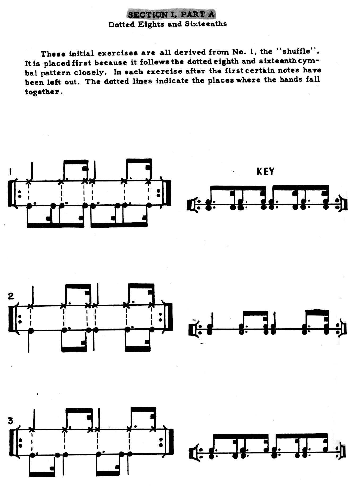
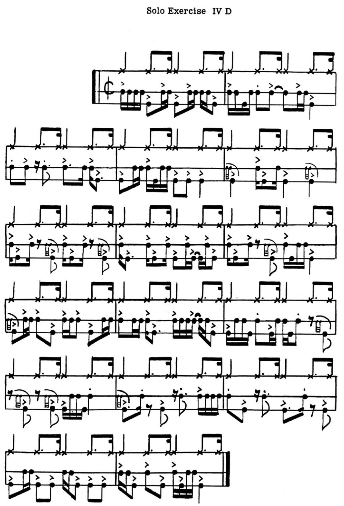

Review: Advanced Techniques for the Modern Drummer by Jim Chapin

When it comes to learning jazz, many drummers are often steered towards two very famous books: Advanced Techniques for the Modern Drummer by Jim Chapin, and The Art of Bop Drumming by Jim Chapin. Both of them are pretty much the default answer online for drummers inquiring about how to learn jazz. I’ve been through both books and I want to write about both of them — since I picked up Advanced Techniques first, I’ll review it first.
Advanced Techniques is the older text, first published back in 1948 (making it one of the oldest drum set books still in print). The author is Jim Chapin, who was a prolific educator. Aside from Advanced Techniques, Chapin is well known for championing the Moller Technique, most famously in his 1992 video Speed, Power, Control, Endurance. All in all, however, Advanced Techniques is probably his most revered work. Modern Drummer wrote that “when Advanced Techniques was first published, many considered it unplayable; today it’s taken for granted that an aspiring jazz drummer will master it”. Ooh la la!
Here’s the thing: I think many drummers miss the point of Advanced Techniquesfor the Modern Drummer, and to be fair, Chapin is partially to blame. The book opens up with some introductory comping exercises, ride and snare only, and they are all very usable in the wild:
You might be wondering why they are written with a dotted 8th + 16th rhythm instead of generic swung 8th’s. Well, as it turns out, Advanced Techniques is very concerned with rhythmic accuracy.
While there are many usable swing patterns in this book, nearly half of the exercises involve playing straight 8th’s and 16th’s on the kick and snare underneath a swung ride pattern:
Challenging stuff for sure… almost too much so. In fact, I’d argue these exercises are way too intense for a jazz beginner, i.e. the kind of player who’s simply trying to get down the basics of swinging/comping.
Ostensibly you could just play all the 8th’s as swung, but the sections involving 16th’s are very obtuse and can only really be played as written. This is the core issue with Advanced Techniques — the book is not meant to be an introduction to jazz. Rather, it’s a coordination book that happens to use the swing discipline to teach independence.
There’s quite a dichotomy with Advanced Techniques. If you’re like me, then you probably got little to nothing out of the straight exercises. They contrast so much with the other parts of the book, which are instead more obviously musical. Alternatively, if you’re a pro jazzer who really valued the coordination challenge, I can’t imagine that the more basic swung patterns were of much help.
I’m not really sure why Chapin featured both simple, practical swing patterns as well as very demanding coordination drills. I wish Chapin had just cut to the chase with the meat and potatoes. I guess the introductory exercises are helpful if you have no exposure to swing music… but what kind of audience is the book for? Perhaps when Chapin wrote Advanced Techniques, there was no material out there to practice swing at all.
All the while, Chapin has said that the ultimate goal of the book is to teach independence, not swing. And even then he has conceded the practicality of the book:
…the idea behind the exercises was to teach independence, not that drummers should use those patterns all the time when they play… independence is a very appealing thing, and it’s like anything else: If you have it, you want to use it. But that’s not necessarily the best way to play music.
Without a doubt, straight notes in an otherwise swung context can be a fun changeup, but this book just goes way overboard with it. Moreover, I feel like jazzers in these situations tend to go for a more linear flair instead of relishing in the clashing rhythms between the ride and the kick/snare.
My problem with Advanced Techniques highlights an enduring struggle regarding practicing: there are an endless amount of very challenging exercises out there, but the truth is that not every difficult thing you can find is worth studying. The time must come for you to decide what’s actually going to have any real value in your day–to–day playing.
A lot of people really admire this book, and that’s fine. Truth be told, it seems like the people who enjoy this book the most actually revere it more for its difficulty than its direct musical applications.
Ultimately there are two issues here. First, is Advanced Techniques being used to teach someone the basics of swing drumming. Second is the utility of the book in general. Regarding the first point, I think The Art of Bop is just the all–around better book for introducing drummers to jazz. The second question is a more difficult one to answer. Independence and interdependence are very valuable skills for a drummer, but Advanced Techniques has such a specific focus, which hurts and helps it. The practical applications seem apparent, but by the end of it all, you might not know of any other situations to use these skills.
Personally, I just didn’t get much out of this book. It’s probably worth checking out at some point in your drumming career since it is such an esteemed text… but go through The Art of Bop first. When all is said and done, I can’t deny how I found myself blowing through pages of this book, since I just didn’t care about much of the content. There are so many things I’d rather practice.
To be fair, my frustration with Advanced Techniques probably has more to do with its status as essential reading for any jazz drummer. It really isn’t, but philosophically there’s nothing wrong with the ultimate goal of the book if that’s your thing. While there’s a jarring difference between the sections, each section in isolation no doubt follows a coherent method.
There’s one last topic I want to bring up. The eagle–eyed among you may have noticed that the cover of this book says “Volume 1”. Chapin did in fact write a sequel: Advanced Techniques for the Modern Drummer, Volume II: Independence — “The Open End”. I think it was published in the early 70s, but information on this title is scarce. In fact, Vol. II might be the holy grail of drum books.
I don’t have a copy; it’s not for sale anywhere*, and for a while, I couldn’t even find a picture of it. It sounds a bit modular; somehow the reader can recombine the pages to create a potentially endless amount of exercises. Apparently, Dom Famularo got it reprinted back in 2004, but that must have been the mother of all limited runs — he seems to have pulled it from his website sometime after 2010, and it’s been long gone ever since. If I didn’t know any better, I’d say the book’s been out of print for the last 25 years.
*Actually, since writing this, I found one store online that purports to have a copy, available for £99. If I somehow got a copy from these people, I suspect it would be upwards of $150 at the end of the day. Worth it? Probably not. I have more interest in seeing how it works than I do in putting it on my music stand…
Posted on August 4, 2021